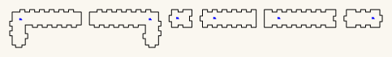

Bore generator
Turns a bore written as a walk through a lattice of blocks into per-piece laser cut files, and checks them before you cut. It is what produces the bore in trumpet-coiled.
snakebox.py is a Boxes.py generator. It is not standalone — Boxes.py provides the finger joints, burn compensation and SVG writer.
The rest of the build files — every instrument, generator and tool, indexed.
Built for LaserMadeMusic, where the cutting and the playing are shown.
Download the whole repository as a ZIP — every trumpet and every tool, not this directory alone. The toolchain and the walks it regresses against are under tools/. GitHub builds it from main on every push, so it is never out of date.
Split out of octomino-snakes, which enumerated and classified the 369 octominoes and is now archived and private. The bore toolchain kept growing after that work finished, and a live instrument should not depend on a frozen repository to rebuild its own parts.
 |
| coupon-16mm/mating-section-cut-once.svg · 483.2 × 71.2mm sheet |
{kind=link}
Install
bore_split.py looks for Boxes.py at ~/boxes and its interpreter at ~/boxes/venv/bin/python, so cloning there needs no configuration; SNAKEBOX_BOXES and SNAKEBOX_PY override both.
git clone --depth 1 https://github.com/florianfesti/boxes.git ~/boxes
cd ~/boxes
python3 -m venv venv && ./venv/bin/pip install -r requirements.txt
cp /path/to/bore-generator/snakebox.py boxes/generators/
./venv/bin/pip install numpy scipy shapely # for check.py and nest.py
./venv/bin/python scripts/boxes SnakeBox --path=RRRRRRR --output=out.svgSnakeBox then also appears in the local web UI (scripts/boxesserver) under Misc.
Usage
boxes SnakeBox --path=RRUULLD --blocksize=31 --thickness=3 --burn=0.1 \
--labels=0 --reference=0 --inner_corners=corner --spacing=0.5| Option | Default | Meaning |
|---|---|---|
--path | RRRRRRR | cell-to-cell moves, U/D/L/R, case-insensitive; empty for a single cell |
--open_faces | — | single cell only: which two faces are open, two of N/S/E/W |
--blocksize | 40 | outer cube edge, mm — used for x, y and z alike |
--pin_width | 12 | width of each connecting tab, mm |
--pin_length | 3 | how far each tab stands proud, mm; 0 disables the coupling and gives plain butt ends |
--pin_play | 0 | extra width of the notches, per side, mm |
--pin_seat | 0.2 | extra depth cut into each notch, mm; stops the tab bottoming out before the two end faces meet |
The trailing flags in the example are the house style used for every part these repositories cut; keep them if you want new parts to match.
--path is moves, not cells
N moves gives N+1 cells, so an octomino is 7 characters (RRRRRRR), not 8. Length is otherwise unconstrained — a 2-cell stub and a 16-cell run both work, and both mate with the octomino set.
These are rejected at generate time, each with an explicit message:
| Path | Why |
|---|---|
RRL | revisits a cell |
RRUULD | curls back and touches itself — gives a branch, not a strand |
RRUULLD | the 3×3 ring: encloses a hole |
DLDDRRU | two cells meet only at a corner (see below) |
The last two are the surprising ones: a perfectly legal self-avoiding walk can still fail, because the shape it traces is not a snake.
--pin_length=0 gives plain ends
bore_split.py --flat passes this for a whole bore.
Set it to 0 for a tube that butts flush against parts with no coupling — an ABox run, for instance. The end profile is then skipped entirely rather than drawn with zero-length sides: polygonWall eats a thickness at each -90 turn for corner correction, so a zero-length tab side goes negative and draws backwards, leaving two zero-width spikes per end. Skipping the profile is the only clean way to get a plain edge.
Single-cell pieces and the elbow
A path always yields a straight-through piece at its two ends, so the shortest turn a path can express is three cells. For a compact corner, give one cell and name the open faces:
boxes SnakeBox --path= --open_faces=S,E --blocksize=31That is a 31mm cube with two adjacent faces open — four parts, each 31.2 × 31.2 at --pin_length=0. Opposite faces (--open_faces=S,N) give a one-cell straight instead.
This works because a plate edge is set in by the material thickness only where a wall actually sits (see Sizing below). The earlier rule assumed the two open faces were at opposite ends of a strand; with adjacent open faces it left the plate polygon 2t short in both axes — wrong geometry rather than an error.
An elbow's openings have three sides, not four
On a one-cell elbow the two openings share an edge, so each opening's frame is missing a side: the fourth side of one opening is the other opening. The piece therefore carries 3 tabs and 3 notches, not 4 and 4.
It still mates in any rotation with a normal tube, because the three tabs sit at the same side midpoints as three of the tube's four notches, and any three of four symmetric positions engage.
Because those two openings share an edge, the elbow has no material along it, and neither neighbouring tube reaches it either — one stops at one opening plane, the other at the other. That leaves the inside of the bend open by t × t across the bore's width: 3 × 3 × 25 = 225mm^3 at blocksize=31. Modelled as solids it is sealed from outside by the two neighbours' walls and the elbow's plates, so it is a notch in the bore rather than a leak — but it shows as a gap where the two neighbouring walls fail to meet.
The lap closes it, using a tab that did nothing
Of the four tabs at an elbow joint, the one facing the elbow's missing face meets nothing. --lap_in / --lap_out name a face whose wall runs t past that opening as a full-width tongue instead of a tab: blocksize - 2t wide and t deep, which is exactly the missing corner. The next piece's end face then lands flat on it — two flat faces, 3 × 25mm of glue area. Modelled as solids, the empty corner goes from 225mm^3 to 0.
The tongue is only as wide as the wall. Running the wall's whole length on instead would carry the finger teeth past the joint plane, where they would foul the next piece's plates.
bore_split.py works out which neighbour carries it. The tongue has to land on a wall rather than a plate, so a straight — whose roll is free — is rolled to suit; a bend's roll is fixed by its own turn. If neither neighbour of an elbow can take it on a wall, the splitter says so and leaves that corner open rather than guessing.
This costs interchangeability. A piece carrying a tongue is cut for the elbow beside it: straight1_lapW.svg is not the same part as straight1.svg and the two are not swappable. Pieces without a lap are unaffected.
A port joint has no corner to leave open
The corner the lap exists to close does not arise at a port: the bore crosses a face, not an edge shared by two openings, and the turn inside the ported piece leaves no void.
The joint is a spigot and socket. With the plate stopped short, the outer t of the port cell is empty, so the mating piece slides that far in and seats on three sides — the two side walls and the end wall. Modelled from what the parts measure, 261mm^2 of its end frame is backed, of the 336mm^2 total; the missing side is where the bore carries on, so there is nothing to back it. The mating piece has no tabs at that end (--plain_in / --plain_out): a tab would need material in a band the plate does not reach.
Two things a port forces:
- Which plate. Only the face the bore crosses is cut; the other stays solid or the bore leaks. The un-mirrored plate is the piece seen from the side given by the cross product of the two axes
flat()keeps —+xwhen the normal is x,-yfor y,+zfor z — and--port_mirrorcuts the other one. - Which way the tabs face. A port is a hole, so it can only offer slots. The piece feeding it must present tabs, which flips the whole chain to
--tabs_at_exit; every joint still has exactly one tab side and one slot side. A bore that would need tabs at both ends of one piece is rejected.
Both change the geometry, so both appear in the file name.
Everything is black — one cut stage
Nothing is emitted in Boxes.py's green ETCHING colour. Across these repositories colour is the cut order — blue engraves, then green → orange → cyan → black — so a green cell-division line is not a marking, it is a cut that runs before the outline and slices the plate into pieces. The generator used to draw those divisions and the option has been removed rather than defaulted off, so it cannot come back by accident.
Sizing
internal bore = blocksize - 2 * thicknessSo a 25mm bore needs --blocksize=31 at 3mm material, and a 10mm bore needs --blocksize=16. This is the number people get wrong.
bore_split.py takes it as --blocksize=N and moves both halves at once — the pitch the plan is laid out on and the pitch SnakeBox cuts to. check.py takes the same switch and must be given it: --files only looks at the sheets as the machine sees them, never at the pitch, so the gate will report a clean pass having checked a design you are not cutting.
Tuning the fit
Width clearance and depth clearance are different jobs
pin_play is a width clearance, pin_seat a depth one. Width decides how tight the tab is side to side — that is the fit you feel when pushing parts together. Depth decides whether the two end faces can close at all.
Make the tab and the notch the same depth and the tab bottoms out at the exact moment the faces meet, so char at the notch floor, a sheet running a little thick, or any glue holds the seam open — a visible line along the whole joint even when the finger joints are tight. pin_seat cuts the notch 0.2mm deeper than the tab is long, which cannot loosen anything: a tab is held by its width and its side faces, never by its tip.
The tab itself is untouched by pin_seat, so parts cut before it still mate — an old 3.00mm tab drops into a new 3.20mm notch, and a new tab is identical to an old one.
pin_play widens the notch only; the tab is always exactly pin_width. So clearance per side is pin_play, and changing it never alters the tab — parts cut at different play values still interchange.
The default is 0, and that is deliberate. Boxes.py's finger joints carry play = 0.0 — no designed clearance at all — and rely entirely on burn for fit. The first cut set used pin_play=0.1, which stacked 0.1mm per side on top of already-correct kerf compensation; the finger joints came out good and tight while the pin/slot was slightly loose. Matching the finger joints at 0 is the fix. Only raise it if your kerf varies enough that the finger joints are loose too — and in that case burn is the real dial.
octomino-snakes' cut-files/fit-test/ is a sweep for dialling this in. The cell count encodes the setting, so the pieces stay identifiable after cutting:
| Cells | pin_play | Clearance per side |
|---|---|---|
| 2 | 0.10 | 0.10mm (first cut set — measured slightly loose) |
| 3 | 0.05 | 0.05mm |
| 4 | 0.025 | 0.025mm |
| 5 | 0.0 | line-to-line (current default) |
| 6 | −0.025 | interference |
Because every tab is identical, any coupon's tab tests any other coupon's notch.
If the finger joints are loose too, pin_play is the wrong dial — that is burn, which should be half your kerf. Too low a burn loosens everything at once.
The 16mm coupon, cut and ready
PLAY_BY_BORE is a lookup of what has been cut — 0 at the 25mm bore, 0.025 at the 10mm — and the direction between those two says required clearance falls as the joint grows. That is a hypothesis with two points on it. The coupon in coupon-16mm/ is the test that settles it, at the bore where the 48% tab fraction binds and the tab comes out 7.68mm.
| sheet | cut | |
|---|---|---|
mating-section-cut-once.svg | once | section 2, the tab side — identical at all three clearances |
notch-A-play0-cut-once.svg | once | section 1 at 0 per side |
notch-B-play0.0125-cut-once.svg | once | section 1 at 0.0125 |
notch-C-play0.025-cut-once.svg | once | section 1 at 0.025 |
{kind=link}
{kind=link}
{kind=link}
Cut all four, then try each notch section against the one tab section. If take-up scales with the joint, B is the one that fits.
The tags are not decoration. Every part on a notch sheet is engraved 1A, 1B or 1C, because the three differ by 0.0125mm of notch and otherwise come off the bed as three identical piles. Without them the test can be performed and not read.
Whatever fits, add the row to PLAY_BY_BORE and stop passing --play: the table is what has been measured, and the flag exists to measure.
The connector
Both ends are open. One end carries four tabs, the other four matching notches, one centred on each side of the square end frame — so tubes mate in any of the four rotations.
That works because the end frame is a square annulus of width thickness. Its partition into parts is only 2-fold symmetric (the two face plates cover the middle of the top and bottom sides; the two side walls cover the full left and right sides), but the annulus region is 4-fold symmetric. A tab centred on each side therefore lands on material in every rotation.
Tabs are sized from pin_width, independent of blocksize as far as SnakeBox is concerned, so tubes of any bore interconnect. That was the rule here too until a 16mm block was cut: pin_width has to fit inside the end frame, which is blocksize - 2t, and the 12mm default does not fit the 10mm frame a 16mm block leaves. SnakeBox raises rather than cutting something wrong:
pin_width 12.0 is too wide for the 10.0mm end framebore_split.COMMON therefore passes --pin_width explicitly: 0.48 x the sound square, floored at the finger-joint tooth and capped to leave 2mm of shoulder either side. The floor matters. A tooth is 2 x thickness and does not shrink with the block, so scaling the tab alone took it below the teeth — at the 10mm bore the fraction alone gives 4.8mm against a 6mm tooth, which made the one tab carrying a section seam the narrowest feature on the sheet. With the floor it is 6mm there, level with the teeth, and 12mm at the 25mm bore where the fraction still wins, so nothing already cut moved.
Tubes of different bore no longer interconnect across that scaling, which costs nothing: they have different bores. Set --pin_width by hand if you want two sizes to mate and both frames can take the same tab.
The bore's two outer ends carry no coupling at all. plain_ends() marks the first piece's entry and the last piece's exit plain, because there is no next section for them to reach: what meets them is the mouthpiece at one end and the bell at the other, and both present a flat plate that glues onto the end face. A tab standing pin_length proud of that face holds the plate off it. The mechanism was already there for ports, which cannot carry a tab either; it just never fired for the ends of the bore itself.
It shows in the shape and so in the filename — BDL~a, BDL_buttin — because the gender of an end changes the part. A walk whose end sections previously shared a shape with an inner one will therefore rename two files, and the generator does not delete what it stops writing. Check the folder for orphans.
The notch gets --pin_play, the tab does not. SnakeBox leaves play at 0 on the grounds that finger joints carry none either, and that does not follow: a finger joint is a dozen teeth sharing an edge, where the errors average out, while a section seam is one tab in one notch drawn exactly its own width. That is a press fit before char, glue, or any kerf the burn allowance did not predict — section 1 would not enter section 2 on the bench. COMMON now passes 0.025mm per side, so the notch opens 0.05mm and the tab keeps its full width.
That number was cut, not chosen. Four fits went through 3mm ply at the 10mm bore: 0.0 would not assemble at all, 0.3 went together with a perceptible rock, 0.1 was very slightly loose, 0.05 fits.
The 25mm bore, though, assembled fine at 0.0 — the fit it was cut at before 2026-09-01. So the requirement is not absolute and not a constant: the zero clearance that jams a 6mm tab in a 10mm frame is fine on a 12mm tab in a 25mm one.
The 10mm bore is not a small size, it is the extreme one. Working the sizing rules across every bore shows they cross at exactly one place: at 10mm the tab is a full finger-joint tooth and the shoulder is at its 2mm minimum, both at once. Below 10mm the tab has to be cut narrower than a tooth to keep any shoulder at all. So the joint that jammed is the tightest geometry these rules permit, not a point somewhere along a range — which is worth knowing before reading much into one jam.
A third difference goes with it, unrecorded until now: the 10mm shoulder is narrower than the material is thick. 2.00mm of shoulder in 3mm ply is 0.67 of a ply; the 25mm shoulder is 6.50mm, or 2.17. One is a short-grain sliver, the other a piece of wood.
What the two data points do rule out. Required clearance falls as the joint grows — 0.025mm per side at a 6mm tab, zero at a 12mm one. A constant absolute clearance would need the same figure at both, and a constant fraction of the tab would need more at 25mm, not less. Both are contradicted. What fits the direction is a fabrication error that does not scale — kerf variation, ply thickness, positioning, all fixed in millimetres — against an elastic take-up that does, so the larger joint simply absorbs what the smaller one cannot.
That is a hypothesis and is marked as one. Note also that the shoulder-stiffness reading in this repository's earlier note has a sign problem: a narrower shoulder is less stiff and should spread more easily, making the small joint easier to close rather than harder. It only works as an explanation if the 2mm sliver splits instead of flexing, which is a different mechanism.
The test that would settle it is cheap and does not need a bore: cut a coupon of just the two mating end frames at an intermediate size — 16mm, where the tab is 7.68mm and the 48% fraction is what binds — at 0.0, 0.0125 and 0.025 per side. If take-up scales with the joint, the middle value should be the one that fits. Minutes on the bed, and it turns a lookup into a curve.
So the play is a lookup of what has been cut, not a curve through it:
| bore | tab | clearance | |
|---|---|---|---|
| 25mm | 12.0mm | 0.0 | assembles, fits well |
| 10mm | 6.0mm | 0.05 | assembles, fits well |
A bore not in the table gets the small-joint value, because that is the safe direction — too loose is a worse joint, too tight is no joint at all. Measure it and add a row rather than trusting the fallback.
The tab is centred on the tube, not on the edge it sits in
A plate edge is inset by t only where a wall sits. On a straight both neighbours of an opening are walls, so its edge is blocksize - 2t — symmetric — and centring the tab on that edge also centres it on the tube. On an elbow the two openings share a corner, so one end of the edge loses nothing and the edge is blocksize - t. Centring on it put the tab t/2 off the tube's centreline, so it no longer lined up with the notch it had to meet: 1.5mm out at blocksize=31, t=3. The tab is now measured from the tube's centre in every case.
Walls were never affected — they are drawn across blocksize - 2t, symmetric by construction, which is why only the elbow plates were wrong.
Describing a whole bore
bore_split.py turns a bore written as a walk along its centreline into the pieces that build it. bore_render.py draws the same walk in 3D so you can check it before cutting.
python3 bore_split.py "N N1 E2 S3 U2 N1 N"
python3 bore_split.py "W D3 E4 N" --write ../designsTurn them around: N N1 E2 S3 U2 N1 N · W D3 E4 N
Both need SNAKEBOX_BOXES pointing at a Boxes.py checkout with snakebox.py installed, unless yours is at ~/boxes. The report needs neither.
The notation
Facing north, east is on your right. N S away / toward you, E W east / west, U D up / down.
You start half a block in already, at the centre of block 1, facing the first term. Every term after that turns you where you stand and then moves you.
| Term | Means |
|---|---|
N first | the way you came in |
D3 | turn down where you stand, then move three blocks down |
E4 | turn east, then move four blocks east |
N last | turn, then leave that way — the final block becomes an elbow |
A term whose direction matches your heading does not turn, it only travels. The turn costs no block, because it happens in the block you are standing in — which is what an elbow physically is. So
blocks = 1 + the sum of the numbersand every block whose heading changes is an elbow. E10 followed by S3 gives nine blocks of straight, one bending block, then three more straight: you write the travel you want and the corners take care of themselves. How those blocks are then grouped into cut pieces is a separate question — see below.
How it splits into pieces
Every SnakeBox piece is flat: its cells lie on a 2D grid, one block thick. A bore is three-dimensional only because pieces are rolled relative to each other at the joints. So one piece can hold any run of blocks that stays in a single plane, however many times it turns, and only a change of plane forces a joint.
A piece is one flat slab, so its cells must share a constant coordinate — that axis is the plane normal. Each opening is then one of two kinds:
- rim — the bore arrives along the plane and the opening sits on the edge of the slab, opposite its neighbouring cell. An end block that bends cannot have one, because its opening would land on a side face.
- port — the bore arrives along the plane normal, straight through a face. One plate stops a cell short rather than being perforated, leaving that cell's face open (
--port_in/--port_out, and--port_mirrorto choose which of the two plates). The plate is only as wide as the bore — it sits between the side walls — so a bore-sized hole would sever it.
A port is what lets a change of plane happen inside a piece instead of forcing a separate elbow. U U2 E2 S2 U2 U takes three pieces without one and two with it, because blocks 5-9 share a constant x and only their entry leaves that plane.
The splitter takes the fewest legal pieces, as a shortest path over block positions. Scanning greedily from the left is not enough: it pulls a straight into the group behind it and then strands the following bend on its own, when that same straight could have begun the next piece and carried the bend inside it. On the bore below that greedy choice cost two extra pieces — U U2 E2 S2 U2 U splits into three, not five.
The plane comes from the directions a piece travels through, not from which coordinates happen to stay constant: a piece whose cells lie on a line has two constant axes, and only one of them is the plane you want.
E E10 S3 14 blocks, 1 piece east then south: one horizontal plane
E E10 U3 14 blocks, 1 piece east then up: one vertical plane
W D3 E4 N 8 blocks, 3 pieces E1 B1 E2
U U2 E2 S2 U2 U 9 blocks, 3 pieces B1 E1 B2 (two Ls and an elbow)
N N1 E2 S3 U2 N1 N 10 blocks, 2 pieces B1 B2The last three, to turn around: W D3 E4 N · U U2 E2 S2 U2 U · N N1 E2 S3 U2 N1 N
An L is one piece no matter how long its legs, because it never leaves its plane. An earlier version cut a piece at every elbow; the last example was nine pieces under that rule, three under greedy coplanar runs, and two now.
Fewer pieces is not free. The lap that closes the inside of a bend has to land on a wall, and a straight beside an elbow can be rolled to provide one while a bend cannot. Merging that straight into a neighbouring L can therefore leave an elbow with no neighbour able to carry the tongue; the splitter reports which piece, and leaves that corner open.
Pieces are named for what they are: straight<n>.svg, the two elbows above, and bend_<path>.svg for a multi-block piece that turns, where <path> is the --path string it is cut from.
Sheets and labels
Sheets wrap to the xTool P2S work area, 600 × 308mm. A piece too big to fit is still written, but flagged in the cut list. BED_W / BED_H at the top of bore_split.py set this; note that a single part wider than the bed cannot be wrapped, only reported.
Every part is engraved in blue with its section number and nothing else, at about 1.7mm — 1 on every part of the first section along the bore, 4 on every part of the fourth. The number is the position in the build, not the shape, so a loose part tells you where it goes; plates and walls tell themselves apart by size. Two sections that happen to be the same shape are cut as separate files rather than sharing one, since sharing would make the number lie; the cut list says when that has happened.
Files are named NN_<shape>.svg for the same reason — 01_ first along the bore. A piece too tall for the bed is laid on its side, and a piece with more parts than one sheet holds is split into _1, _2. The label goes at the roomiest point on the part, not at the centre of its bounding box: an L-shaped face plate has its bounding-box centre out in the notch, where the engraving would miss the material altogether. If the roomiest spot is still tight the label shrinks to fit.
What it rejects
- a number on the first term — that term is only the way you came in
- a reversal (
EthenW), which is not a turn - turning twice in one block: a block bends once, so the previous term needs at least one block of travel
- half blocks written out — entering is implicit now
It warns when two terms share a heading with no turn between (E2 E3 should be E5), and when two elbows meet directly. The latter is sound if both turns lie in one plane, but if their planes are perpendicular each opening is missing a different side: only two of the three tabs engage and the spare one sits in the bore. Put a one-block straight between them.
Note that this notation cannot catch a mistyped direction the way an earlier, wordier one could — every direction is legal here, since every term may turn. A wrong letter gives a valid bore, just not yours. Render it before cutting.
Openings
The entry hole faces backwards along the way you travel, so the two openings end up opposite each other exactly when the entry and exit headings match. A bore that enters heading north and leaves heading north has openings on opposing faces; one that leaves east does not.
Supporting scripts
Python 3. Most are standard library only; check.py needs shapely and nest.py needs numpy and scipy. Installing them into the Boxes.py venv means one interpreter runs everything and no environment variables are needed:
~/boxes/venv/bin/pip install numpy scipy shapely
~/boxes/venv/bin/python bore_split.py "N N4 U3 E4 U3 S4 U3 W4 U3 N4 N" --write DIR| Script | Does |
|---|---|
bore_split.py | turns a bore in the notation above into per-piece cut files |
bore_render.py | draws a bore in 3D, coloured by piece, joints marked |
check.py | runs every check on a bore's parts and sheets before cutting |
assemble.py | folds a section up as a solid and tests whether its bore is sealed |
nest.py | packs a bore's parts onto sheets four ways and reports the best |
piece_render.py | draws one piece from six angles, each face coloured by the part it is |
viewer.py | writes a bore as a page you can turn around with the mouse |
mcwalk.py | draws a walk under Minecraft's rules, lighting up any cell filled twice |
hilbert.py | emits a Hilbert cube as a walk |
regress.py | runs the gate over every design in walks/ and the design library |
svgpath.py | reads the point list back out of an SVG path |
snakebox.py | the Boxes.py generator that draws one flat piece on a cubic lattice |
snakeboxvar.py | the same, for a lattice whose straight blocks run longer than its turns |
coils.py | writes one page holding several coils, rather than one page each |
sizes.py | the block-pitch and bore arithmetic the other scripts share |
bore_split.py writes to ../designs by default — the design library, which sat outside every repository until they became one. Override it with an explicit path to --write.
walks/
Twenty-nine bores kept as one line of notation each, and the corpus regress.py runs the gate over. They exist because every one of them broke something once:
| Group | Files | What they hold onto |
|---|---|---|
| the hooks | small_hook.txt, hook_check.txt, hook_return.txt, hook_riser.txt, double_hook.txt, double_hook_tight.txt, triple_hook.txt, triple_hook_up.txt, quad_hook.txt, quad_hook_deep.txt, quad_hook_full.txt, quad_hook_round.txt, five_loop.txt, five_loop_up.txt | a spiral tightening one loop at a time, each variant a step where the split or the fit changed |
| the telescopes | telescope_spiral.txt, wide_telescope.txt, nested_spiral.txt | coils that grow as they climb, the widest sheets the bed will take |
| the Hilbert cubes | hilbert_cube.txt, hilbert_open.txt, hilbert_snorkel.txt | a space-filling curve at three scales — the densest walks here, and the ones that fold hardest |
| the singles | three_block_turn.txt, corner_to_corner.txt, metre_spring.txt | the three-block minimum on its own, a walk that turns at every opportunity, and a metre of bore in a spring |
| the built one | trumpet_switchback.txt | the walk in trumpet-switchback, cut and assembled at both 25mm and 10mm — the only one here that exists in wood |
Run them all:
~/boxes/venv/bin/python regress.pyAdd one by dropping a .txt in beside the others. regress.py picks it up by name.
Verifying
There is no test runner; correctness is checked by re-deriving geometry from the output. Invariants that have caught real bugs:
- walls == boundary runs − 2; perimeter == 18 units for any 8-cell path
- convex corners − reflex corners == 4 for any rectilinear outline
- exactly 4 tabs and 4 notches per box, one width each across the whole set
- all four tabs at the same end — the count alone does not prove this
SnakeBox was validated against Boxes.py's own Tetris generator: the L, I and S tetrominoes are themselves snakes, and SnakeBox reproduces Tetris --shape=L/I/S with byte-identical cut paths.
Two parsing traps
If you write your own checker: burn compensation leaves sub-0.1mm steps at every corner, and polygonWall splits edges into collinear pieces at corner corrections. Naive vertex-pattern matching reads both as spurious features. Merge collinear runs first.
Released under CC0 1.0.